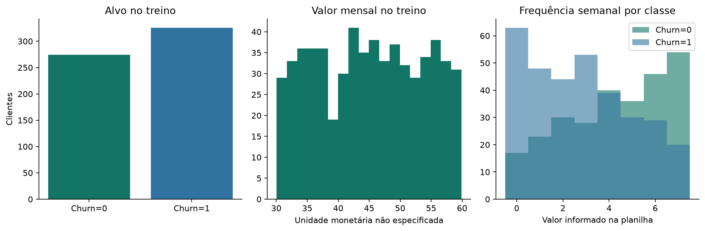
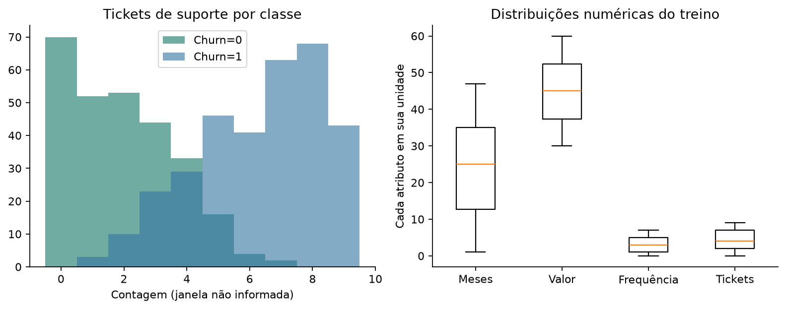
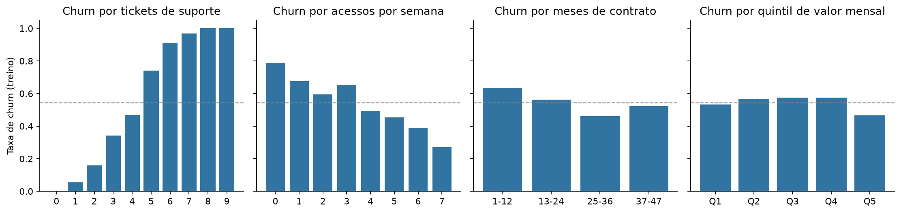
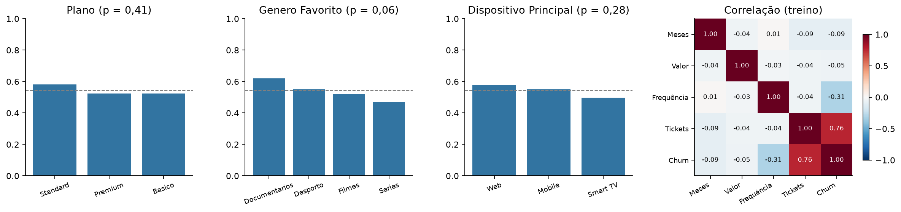
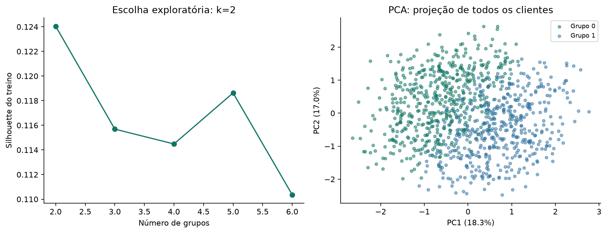
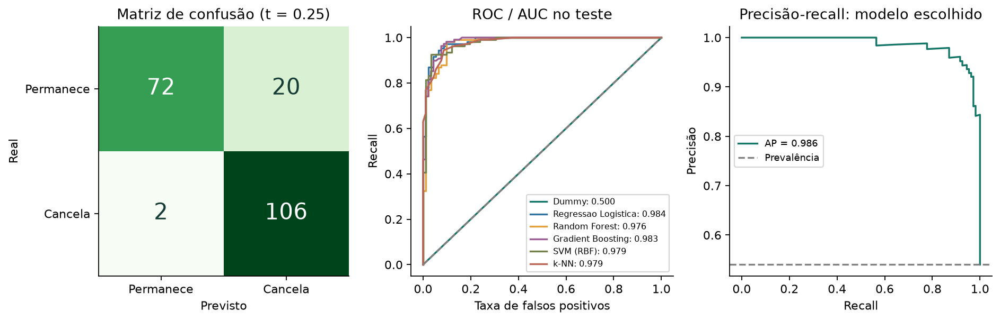
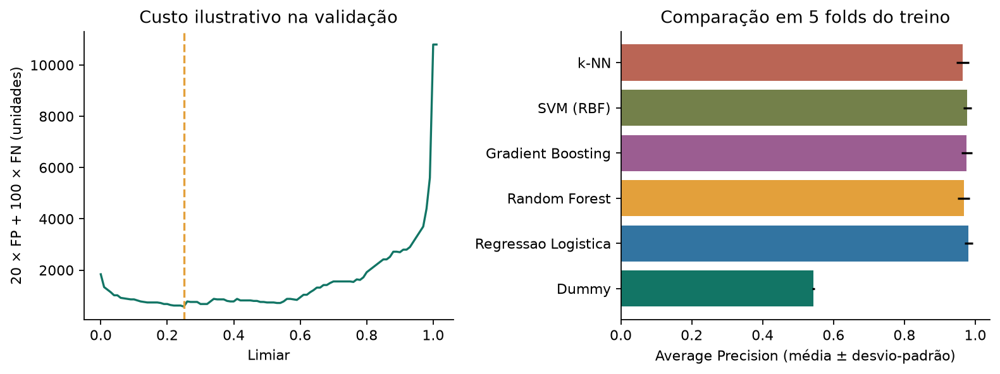
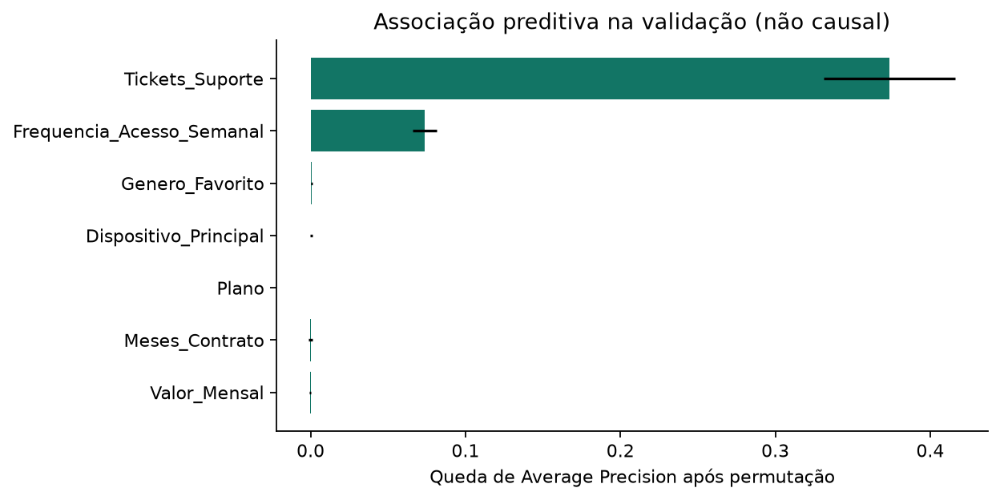

INTRODUCTION TO MACHINE LEARNING · PARTE PRÁTICA
GlobalStream
Retenção e segmentação
Análise de globalstream_data.xlsx (aba Sheet1), base oficial do enunciado. A planilha tem uma linha por cliente e não tem datas: a avaliação classifica o Churn registrado e não comprova, sozinha, previsão para o próximo mês.
Desenho do experimento
Treino: 600; validação: 200; teste: 200. Seis classificadores comparados por Average Precision em 5 folds do treino. Limiar escolhido na validação. Imputação, limites de outliers e encoding aprendidos no treino. ID e Churn excluídos dos atributos.
Custo ilustrativo: 20 × FP + 100 × FN (não representa ROI). No teste, contatar todos custa 1840 unidades; não contatar ninguém custa 10800; a política ajustada custa 600.
Comparação no teste
| modelo | precisao | recall | f1 | roc_auc | average_precision | custo_ilustrativo |
|---|---|---|---|---|---|---|
| Dummy | 0.540 | 1.000 | 0.701 | 0.500 | 0.540 | 1840 |
| Regressao Logistica | 0.936 | 0.954 | 0.945 | 0.984 | 0.986 | 640 |
| Random Forest | 0.920 | 0.963 | 0.941 | 0.976 | 0.976 | 580 |
| Gradient Boosting | 0.937 | 0.963 | 0.950 | 0.983 | 0.983 | 540 |
| SVM (RBF) | 0.917 | 0.926 | 0.922 | 0.979 | 0.981 | 980 |
| k-NN | 0.927 | 0.944 | 0.936 | 0.979 | 0.980 | 760 |
| Regressao Logistica (limiar ajustado) | 0.841 | 0.981 | 0.906 | 0.984 | 0.986 | 600 |
Teste consultado após congelar modelo e limiar. AP = Average Precision. A AUC não muda com o limiar.
Personas
| persona | clientes_total | Frequencia_Acesso_Semanal | Tickets_Suporte | Plano_predominante | taxa_churn_total | acao_proposta | |
|---|---|---|---|---|---|---|---|
| cluster | |||||||
| 0 | Acesso mais frequente, menos tickets | 536 | 3.74 | 2.14 | Premium | 0.20 | Testar recomendações de conteúdo e adequação da comunicação ao uso. |
| 1 | Acesso menos frequente, mais tickets | 464 | 3.12 | 6.94 | Standard | 0.93 | Investigar experiência de suporte e testar recuperação do atendimento. |
Grupos formados sem usar o Churn; a taxa de churn de cada grupo foi calculada depois. Silhouette: 0.124; variância retida no PCA: 35.3%.








Análise crítica
5.1 DISCUSSÃO CRÍTICA SOBRE DESEMPENHO E UTILIDADE PRÁTICA
- O modelo escolhido (Regressao Logistica) ordena muito bem quem cancela: AUC de 0,984 no
teste (IC 95%: 0,968 a 0,995), contra 0,500 do Dummy, que não usa os atributos.
- Precisão x recall: no limiar 0,50, o modelo teve precisão de 93,6% e recall de 95,4%
(5 cancelamentos ignorados). Com o limiar de custo (0,25), o recall subiu para
98,1% (2 ignorados) e a precisão caiu para 84,1% (20 descontos
desnecessários). Como ignorar quem vai sair custa 5 vezes mais, o limiar deve favorecer o recall.
- Utilidade: no teste, contatar todos custa 1840 unidades; não contatar ninguém, 10800;
o modelo no limiar 0,50, 640; e no limiar ajustado, 600, com
126 contatos em vez de 200. Se a equipe só puder abordar 20% da base, os
40 clientes de maior risco tiveram precisão de 100,0% (recall de 37,0%).
- Cautela: o teste tem só 200 clientes; os resultados não garantem o mesmo desempenho em
outro período nem medem o efeito de uma campanha.
5.2 COMPARAÇÃO ENTRE ABORDAGENS E RESULTADOS
- Classificadores (Average Precision média na validação cruzada):
Regressao Logistica 0,981 | SVM (RBF) 0,977 | Gradient Boosting 0,975 | Random Forest 0,967 | k-NN 0,964 | Dummy 0,543.
As diferenças entre os modelos são pequenas diante da variação entre folds. Entre os
algoritmos sugeridos no enunciado, o melhor foi o SVM (RBF), com 0,977;
a Regressão Logística ficou à frente por pouco e foi mantida por ser mais simples e
interpretável.
- Overfitting (AP de treino menos AP da validação cruzada):
Regressao Logistica 0,004, Random Forest 0,022, Gradient Boosting 0,011, SVM (RBF) 0,014, k-NN 0,009.
A maior diferença aparece em Random Forest, que memoriza mais o treino; a menor, em Regressao Logistica.
- Segmentação x modelo, com o mesmo número de contatos no teste (98):
contatar o grupo de maior churn ("Acesso menos frequente, mais tickets"): 92
cancelamentos captados, precisão 93,9%, recall 85,2%, custo 1720;
contatar os 98 clientes de maior probabilidade segundo o modelo: 94 captados,
precisão 95,9%, recall 87,0%, custo 1480.
O modelo escolhe melhor QUEM abordar; a persona ajuda a decidir COMO abordar. As duas
abordagens são complementares.
- Dependência de uma variável: sem Tickets_Suporte, a AP da validação cruzada cai de
0,981 para 0,705 (AUC de 0,676).
Quase todo o poder preditivo vem dos tickets.
5.3 LIMITAÇÕES DO PIPELINE
- Sem datas, não há como confirmar que os tickets foram registrados ANTES do cancelamento. Se
parte deles for aberta para cancelar, o modelo estaria "vendo a resposta" (vazamento) e o
desempenho real seria bem menor (ver o resultado sem Tickets_Suporte acima).
- Sem histórico mensal nem tempo de tela: a validação é entre clientes, não entre meses, e a
frequência semanal é só uma aproximação do consumo.
- 220 clientes têm mais de 36 meses de contrato numa empresa de 3 anos; o significado
da coluna precisa ser confirmado.
- Segmentação fraca (silhouette de 0,124, k = 2): os grupos são exploratórios, não tipos rígidos.
- Os custos de 20 e 100 são hipóteses didáticas, não custos reais nem retorno financeiro.
- Base pequena (1.000 clientes; teste com 200): há incerteza amostral nas métricas.
5.4 PROPOSTAS DE MELHORIA FUTURA
- Obter datas de tickets e cancelamentos, o motivo de cada chamado e o tempo de tela real, e
montar janelas de observação anteriores ao churn.
- Validação temporal: treinar com meses passados e testar nos meses seguintes.
- Calibrar as probabilidades e escolher o limiar com custos reais e a capacidade da equipe.
- Testar a segmentação só com variáveis de comportamento (ou K-Prototypes, para dados mistos)
e avaliar a estabilidade dos grupos.
- Piloto controlado (teste A/B) para medir o efeito real das ofertas; modelos de uplift.
- Monitorar o desempenho, as mudanças nos dados e as diferenças de erro entre grupos de clientes.